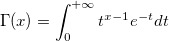

Gammaln-func
The natural log of the Gamma function has the following form:
gammaln(x)
This function returns the natural log of the gamma function (x), where (x) is given by:

/math-07710b5c43702a8bb7b9104eacc6ba71.png "\Gamma") (x), where (x) is given by:(x), where (x) is given by:
(x), where (x) is given by:(x), where (x) is given by: